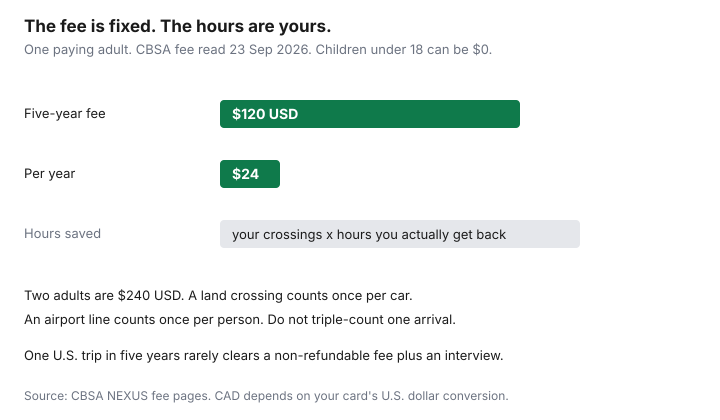

Travel · Canada
Is NEXUS Worth It for Canadian Households? Cost, Timeline, and Break-Even Trips
Families discover NEXUS in the security line, then discover the interview calendar. The card is a five-year membership run jointly by the Canada Border Services Agency and U.S. Customs and Border Protection. It is worth the fee when the hours you will actually get back, on the crossings you will actually make, clear $120 USD. It is a poor buy the month before a single vacation.
Dollar figures and clocks below were read from CBSA and CBP pages on 23 Sep 2026. Interview supply moves. The TTP account is the status that matters, not a forum’s “I waited eight months.”
Disclosure: There is no natural retail offer on this decision. Saving Optimizer does not claim a NEXUS, card, or expedited-screening partnership. Some credit cards reimburse a trusted-traveller fee; that is a benefit you already hold or you do not. This page does not rank cards. Education only.
Key takeaways
- The processing fee is $120 USD, non-refundable, for five years. The same figure is on CBSA’s program page and on the renewal page.
- Children under 18 are free when a parent or legal guardian applies with them or is already a member. Each person still needs a card and an interview appointment.
- CBP says ordinary vetting is about two weeks. Manual review is published at 12–24 months. The card itself is about 4–6 weeks after a successful interview. New applicants should start a year before they need the lane.
- Break-even is your number: trips per year times hours you truly save, over five years, against $120 USD. This page will not invent a universal “minutes saved.”
- Renewal opens about one year before expiry. File before the date if you want benefits to continue. A passport change is an enrolment-centre visit, not a website checkbox.
- Skip it if you rarely cross, or if you will let the passport lapse and skip the update.
Fee (USD), five-year term, and free under-18 rules when a parent is a member
CBSA’s NEXUS pages state a $120 USD non-refundable application processing fee. Membership is valid for five years. The renewal page states the same $120 USD for a renewal. A replacement card for a lost, stolen, or damaged card is a separate $25 USD non-refundable fee, and that replacement can require another interview.
Children are the household exception, and it is narrower than “kids are free.” CBSA’s “before you start” page says the fee for someone under 18 is waived if their parent or legal guardian is also applying, or is already a NEXUS member. A minor who applies alone, or whose parent is not in the program, can be charged $120 USD. That change dates to the joint fee rule that took effect 1 October 2024. Budget the adult fees first. Add a child fee only if no parent on the application is, or will be, a member.
Everyone who wants the lane needs their own card. A parent’s card does not wave a 16-year-old through. Two adults are $240 USD for five years. Two adults and two children, with a parent applying or already a member, are still $240 USD in fees, plus four interviews. The fee is paid in the U.S. Trusted Traveller Programs system by credit card, or by transfer from a U.S. bank. A Canadian card will convert the USD. Price that conversion with the FX guide if you want the CAD number. Do not treat $120 USD as $120 CAD.
| Who | Fee | Term |
|---|---|---|
| Adult, new or renewal | $120 USD, non-refundable | 5 years |
| Under 18, parent applying or already a member | $0 | 5 years, own card |
| Under 18, no member parent | $120 USD | 5 years, own card |
| Lost or damaged card | $25 USD | Replacement, not a new five years by itself |
Benefits: air, land, marine; Global Entry and TSA PreCheck adjacency
NEXUS is three modes, not an airport club. CBSA’s benefit list, read the same day, is the one to use.
- Air, entering Canada: self-serve NEXUS kiosks and eGates at major international airports, plus expedited CATSA screening where those lines exist. The line has to be open. A kiosk at an airport you never use is not a benefit.
- Air, entering the United States: Global Entry kiosks at Canadian preclearance airports. You do not file a separate Global Entry application to use that NEXUS benefit. You do have to put the membership number on the reservation.
- Land: dedicated NEXUS vehicle lanes at designated crossings in both directions. The passenger list in the car has to match members. One non-member in the back seat can put the car in the regular lane. Check the crossing you actually use. Not every port has a NEXUS lane.
- Marine: faster processing at marine crossings into the United States, on CBSA’s description of the program. A household that never arrives by boat should not count this line.
- TSA PreCheck adjacency: CBSA lists TSA PreCheck lines at participating U.S. airports as a NEXUS benefit. PreCheck is a U.S. screening product. It shows up when the Known Traveller Number is on the U.S. boarding pass. It does not replace CATSA, and it does not exist on a domestic Canadian flight.
What the card does not do: it does not change a Basic fare’s bag rule, it does not move a flight, and it does not cover a hospital bill. Passenger refunds are the cancellation guide. Medical cover is the Insurance guide, why provincial plans barely cover you abroad.
Application + interview backlog reality—start early
The application is online in the U.S. Trusted Traveller Programs system. CBP’s FAQ describes two steps: vetting, then an interview.
Vetting “normally” finishes within about two weeks. If the file needs more review, CBP says a manual review currently takes 12 to 24 months, and that two people in the same household can land on different clocks. You cannot predict which file will be the slow one. Conditional approval is what lets you book the interview. It is not the card.
The interview is in person. CBSA’s “after you apply” page says each family member needs their own appointment time, including minors. Book a day that has enough slots for the whole household or you will approve the adults and leave a child in the regular line for a year. For the U.S. portion, CBSA describes options at a U.S. preclearance location in a Canadian airport or enrolment on arrival. Read the current centre page before you assume a city near you has dates. CBP says a NEXUS applicant must finish enrolment within five years of conditional approval or the application is cancelled, and the fee is not refunded. That outer limit is not permission to wait five years. The practical limit is the trip you wanted the card for.
After the interview, CBSA says approved applicants can expect the physical card in about 4 to 6 weeks. A summer trip booked in May is not a NEXUS trip unless the card is already in the wallet. Households that want the lane for next summer apply this season, then treat interview dates as a calendar item, not a hope.
Break-even: trips per year × hours saved vs $120 USD
There is no official “minutes saved” statistic that applies to your airport and your land crossing. Build the number from trips you will take. Ignore trips you might take.
The fee is $120 USD per paying member over five years, or $24 USD per year. Hours saved over five years equal crossings per year, times hours you believe that crossing returns, times five. Divide $120 by those hours if you want a dollars-per-hour figure. If the only honest answer is “we drive to the U.S. once every two years and the regular lane is twenty minutes,” the card is a convenience you are buying, not a payback.
| Pattern over 5 years | Hours you write in | Fee | How to read it |
|---|---|---|---|
| 2 U.S. air round trips a year | Your CATSA plus PreCheck minutes, times 10 trips | $120 USD | Worth it only if those minutes are real and repeated |
| 8 land crossings a year | Your lane difference, times 40 crossings | $120 USD | The usual case where the math clears quickly |
| 1 vacation in 5 years | One security line | $120 USD | Skip, unless the interview is already done for other reasons |
| Two adults, same pattern | Same hours, twice the people | $240 USD | Double the fee. Do not double-count one shared car crossing as two air trips |

Count a land crossing once per car, not once per member, when the benefit is the vehicle lane. Count an airport crossing once per person, because each person stands in a line. Do not add Global Entry, PreCheck, and the Canadian kiosk as three separate hours on one arrival if you only passed one checkpoint. Write the checkpoints you will walk through.
A card that reimburses the fee changes the cash break-even to zero and leaves the time cost of the interview. If you do not already have that benefit, do not open a card to chase $120 USD. The interview is the real price for a rare traveller.
Renewal timing (start ~1 year out) and passport update at enrolment centres
CBP’s FAQ says you become eligible to renew one year before the membership expires. You can also renew after it expires, but the grace that lets you keep using benefits applies when you submit the renewal before expiry. Put a reminder at the one-year mark, not the month the card dies. CBSA says that if you renew before the expiry date you can retain NEXUS privileges, and that renewal applications may be processed within about 30 days. That estimate is for a complete file. It does not include postal delivery or an interview if one is required.
The streamlined renewal often skips the interview when your information has not changed and nothing new affects eligibility. Assume an interview if you have a new charge, a new citizenship document, or a messy file. Do not assume the 30-day line if CBP routes you back to manual review.
Passports are the other clock. CBP says membership does not die when the passport expires, but you cannot use Global Entry benefits at airports and land crossings until the new passport is in the system. CBSA is stricter about the method: passport and citizenship updates, and a change in residency that could affect eligibility, must be done in person at an enrolment centre. A household that renews passports every ten years and never books that visit will hold a card that fails at the kiosk. Book the centre when the new passport arrives, not the week you fly.
Who should skip: rare travellers and those who will not keep passports current
Skip, or wait, in these cases.
- Rare travellers. One U.S. trip in five years does not repay $120 USD plus a half-day interview, unless the interview is effortless in your city and you simply want the lane. Be honest about the trip count before you pay a non-refundable fee.
- Passport discipline. If the household already struggles to renew passports before a trip, NEXUS adds a second document and an in-person update. The card will be the thing that fails first.
- Interview refusal. Conditional approval with no appointment is a fee you already lost. If nobody can take a weekday slot, do not apply “just in case.”
- A mixed car. Friends who are not members cancel the land-lane benefit for that crossing. If most of your crossings include a non-member, the lane is not your lane.
- A child with no member parent. You may be about to pay $120 USD for a minor who still needs an interview. Wait until a parent is in the file.
Apply when the five-year trip list is real: regular land crossings, or several U.S. flights a year, with passports that will stay current. Then start early enough that a 12-month manual review still leaves you a card. The fare you buy for those flights is a different decision, in the booking-window guide.
Sources & date stamps
- CBSA, NEXUS program and “what you need before you start” — $120 USD non-refundable fee, five-year term, under-18 waiver when a parent applies or is a member, own card per person. Used 23 Sep 2026.
- CBSA, renew or replace — renewal $120 USD, replacement $25 USD, benefits retained if you renew before expiry, renewals may be processed within 30 days, interview often skipped when nothing material changed. Used 23 Sep 2026.
- CBSA, after you apply, and enrolment-centre page — one appointment per family member including minors; card about 4–6 weeks after approval; passport and citizenship updates in person. Used 23 Sep 2026.
- CBP Trusted Traveller Programs FAQ — vetting normally within about two weeks; manual review 12–24 months; renew from one year before expiry; benefits can continue if renewal is filed before expiry; NEXUS enrolment to be completed within five years of conditional approval; passport update required before Global Entry use. Used 23 Sep 2026.
- U.S. Federal Register, 2 Apr 2024 — fee of $120 USD from 1 Oct 2024, including the minor rule. Background for the current CBSA figures.
Frequently asked questions
How much does NEXUS cost in 2026?
CBSA and the renewal page both state a non-refundable processing fee of $120 USD. Membership lasts five years. Children under 18 pay no fee when a parent or legal guardian is applying at the same time or is already a member. A child whose parent is not a member can be charged the $120 fee. Everyone who wants the benefit needs their own card.
How long does a new NEXUS application take?
U.S. Customs and Border Protection says vetting normally happens within about two weeks. If the file needs manual review, CBP’s published band is 12 to 24 months. You still need an interview after conditional approval, and each family member, including minors, needs a slot. CBSA says approved applicants can expect the card in about 4 to 6 weeks after the interview. Start long before the trip that needs the card.
Does NEXUS include Global Entry and TSA PreCheck?
CBSA lists Global Entry kiosks at Canadian airports for the U.S. entry, dedicated land lanes, marine processing, TSA PreCheck at participating U.S. airports, NEXUS kiosks and eGates in Canada, and CATSA expedited screening where it is offered. Add the membership number to the booking or the benefit does not show up at the checkpoint.
When should we renew?
CBP says you may renew starting one year before the membership expires. If you submit the renewal before expiry, you can keep using the benefits after the printed date while it is processed. CBSA says renewal applications may be processed within about 30 days, and an interview is often skipped if nothing material changed. A new passport still has to be updated, and CBSA says passport changes are done in person at an enrolment centre.
Who should skip NEXUS?
Households that cross into the United States once or twice in five years, and anyone who will not keep the passport current or attend an interview. The fee is non-refundable. A card you cannot use because the passport in the file is expired is not a saving.